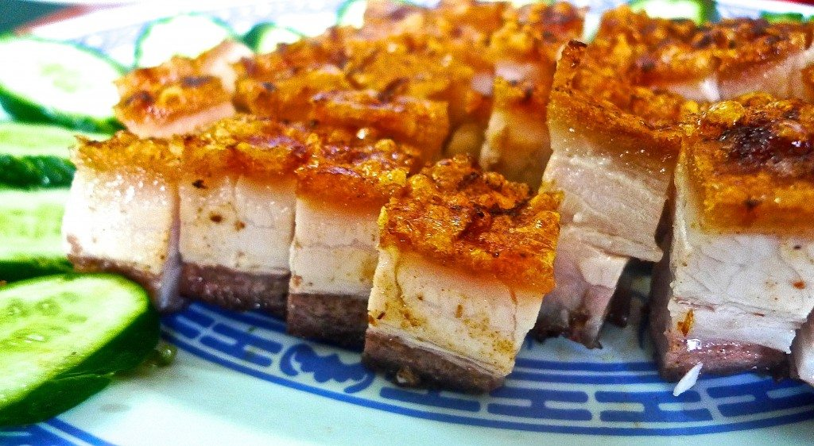
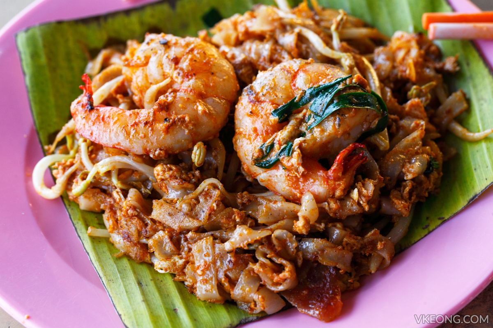

Bah Kut Teh
BKT is also one of my favourite food, the best BKT you can find is right located in Klang.
However, there are many popular BKT resturant such as Four Eye BKT, Ah Her BKT. Samy BKT, and many more.
|  |
Siew Yoke (Roasted Pork Belly)Crispy, crunchy, crackly Roast Pork Belly is a favorite of many. Not only that, home-make Siew Yoke is so much superior to those bought because of the super crispy and crackling skin. |
Char Kuey TeowI like it when the Char Kuey Teow have more shrimps and extra spicy flavour into it. The word Char Kuey Teow is the phonetic approximation of the Chinese word 炒果条 pronounced in Hokkien. |
 |
|
Bah Kut TehBKT is also one of my favourite food, the best BKT you can find is right located in Klang. However, there are many popular BKT resturant such as Four Eye BKT, Ah Her BKT. Samy BKT, and many more. |